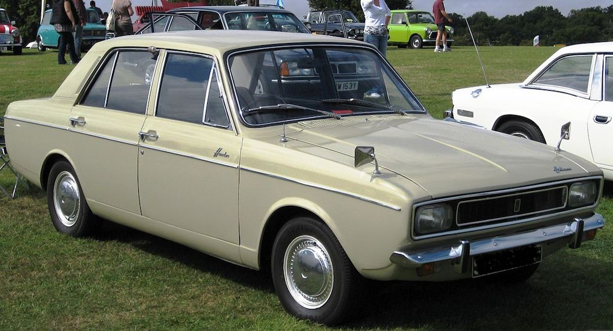
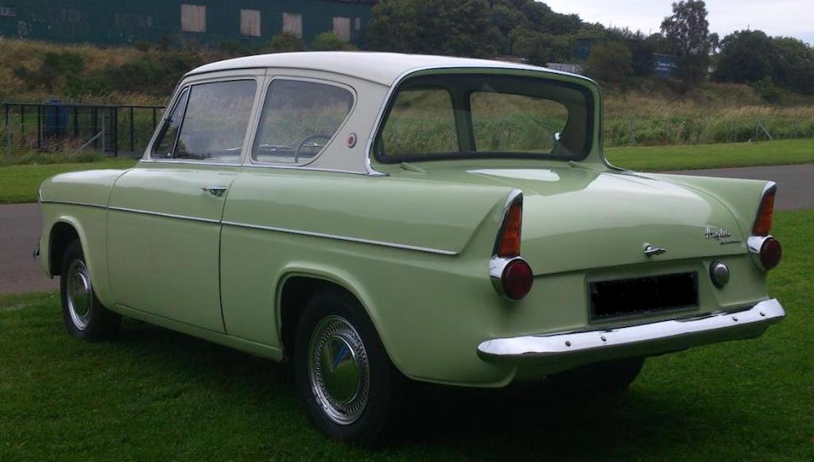

The word anecdote is defined as "a short account of an interesting or humorous incident". I can't guarantee that these snippets of my life are either interesting or humorous, but I thought it worthwhile recording them. They are not in any particular order, just as they occur to me.
The summer before we married I went off to Greece for three weeks with some friends from work. Originally there were just three of us, but then one person declared that he was going to be joined by his girlfriend! We journeyed by train from London to Athens on the 'Acropolis Express', although that is another story.
During our stay in Greece we took a ferry from Pireas, the port of Athens, to the island of Mykinos, Santorini and then on to Crete. On one of these ferry journeys (I can't remember which) we decided that we would like a cup of coffee. I seem to remember that the boat was actually Turkish and the 'cafe' was little more than cupboard with a door to the outside and a counter. The person behind the counter was also Turkish and we tried with English and a few words of Greek to explain that we did not want Turkish coffee, but a large mug of milder and less thick coffee. Suddenly the man behind the counter said "Nescafe". Yes we said, that was what we wanted.
It took him some time to make four quite small mugs of black coffee, for which we duly paid, only to find that we now had the thickest, blackest, strongest mug of Nescafe that we had ever tasted!
During my final year at university (1969) some friends and I decided that we would like to go on holiday in the summer. I ideas of buying a boat and sailing around to the Mediterranean soon morphed into hiring a car and heading for Rome. So five of us hired a new Hillman Hunter. One person picked it up in Lancaster, picked up someone in Manchester, two more in Wales and then arrived in Potters Bar. One of those from Wales had borrowed a scout group tent; a heavy green canvas ridge tent with wooden poles and wooden pegs. The tent was on the roof rack, along with other bags and boxes, the boot was full and we had some stuff inside as well as the five of us.
After Potters Bar, where everyone slept on the floor of my parents house, our first stop was at a camp site in northern France. The holiday makers on the camp site were mainly French and they all had modern (for 1969) frame tents, some with low fences around them to mark out their space. When we started erecting our ridge tent a group of youngsters gathered around to watch. I don't think they had seen such a thing before. Then, when some dark clouds gathered and it threatened to rain, we dug a trench around the tent to channel away the water. Everyone else had sewn-in groundsheets, so again we had a crowd of onlookers.
We only had one problem with the car when the ignition light came on. Somehow we found a back-street car workshop and he diagnosed a failed dynamo. So he found a similar unit, turned down the spindle a bit on his lathe and we had no trouble with it for the rest of the journey. I recall swimming in huge waves on the coast near Rome, which is odd for the Mediterranean, and climbing the Tower of Pisa, as well as seeing the sights of Rome.
We had crossed the Channel on a hovercraft car ferry, which was much quicker than the boat. On our way back to England, however, the sea was very rough and the other four used the sick-bags. Luckily the sea became quite calm about half way across, which was lucky, because I didn't have a bag. We had all more or less run out of cash and so hadn't eaten much during our journey back. However, between us we did have some pounds, and so when we were back in England we stopped at a pub and had steak and chips.
I think it must have been 1970, whilst sharing a house in Derby, when Chris Williams (with whom I'd been in digs when I first went to Derby), John Starkey (who had been brought up in Derby) and I decided to have a holiday in the South of France. I had my Ford Prefect 107E (already ten years old), John had a Triumph Herald with a soft top (and not much room in the back) and Chris had a green Ford Anglia (the one with the raked rear window). So we decided to drive there and back in Chris' car, along with our camping gear.
There are two things that I particularly remember about that holiday. Yes, it was nice in the South of France around St Tropez, but it was the journey down and the forest fire that I particularly remember.
So as to be able to spend more time on the south coast we decided to drive non-stop through France, taking it in turn to drive. Unfortunately I got the night shift. But, not being a good traveller at the best of times, I found that being curled up on the back seat during the day was not inducive to sleep. So when it came to my shift I wasn't really in a fit state to drive, particularly because it was dark and the final stretch was down windy mountain roads to the coast. Luckily we arrived safely, even if a few of tight bends were a bit hairy.
While we were camping in a wooded area just outside St Tropez, quite a strong wind picked up. Apparently this is known as a 'mistral'. The wind itself was not too much of a problem, but a forest fire started and the wind made it spread very rapidly. These days we often see news reports of wild fires in various parts of the world, but in 1970 it wasn't something we had expected. We had to evacuate our camp site and drove along roads with flames reaching into the sky. We managed to get out of the fire area, but all our gear smelt of smoke for the rest of our holiday.
I mentioned earlier that I had travelled with some friends to Greece on the Acropolis Express. This was the summer before we were married and Angela came to the station in London to see me off. I can't remember which station it was, but we caught a train to Dover, went over on the ferry and possibly caught another train before picking up the Acropolis Express. The carriages were divided into compartments with bench seats facing each other (one facing forward and one backward), but the two seats slid together to completely cover the compartment, forming a surface on which to sleep. If I remember correctly, we only had to sleep for one night.
The route took us through Germany, Austia and what was then Yugoslavia, before passing into Greece and going down to Athens. Since then, Yugoslavia has split into a number of states, but then it was a communist 'dictatorship', headed by General Tito. Two things stand out as we passed through Yugoslavia. Firstly, everything looked very 'grey'. The buildings were all concrete and the people's clothes were drab. Secondly, the Acropolis Express was used as a local commuter train. It stopped at every station and lots of people got on and off at each. A man came into our compartment, which was already quite full, and sat down. He got out a tin of sardines and some bread and started eating. He did offer some to the rest of us, but we all declined. He then sat back and closed his eyes. Suddenly there was a strong smell of cheese. I got up and opened a carrier bag we had, to see if the cheese we had was going off. As I sniffed at the contents, another passenger waved his hand at me as to say 'no' and pointed downwards. The Yugoslav passenger had taken his shoes off!